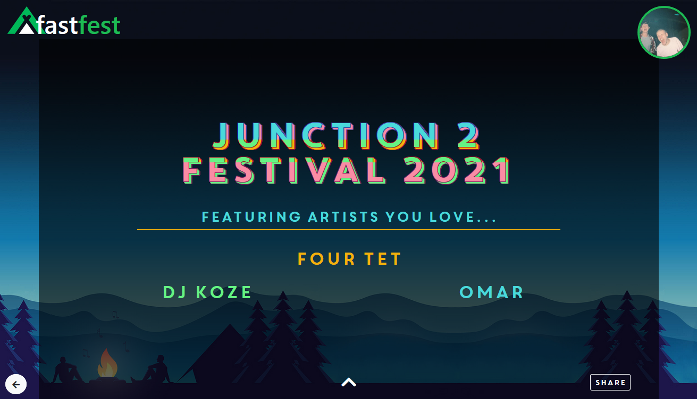
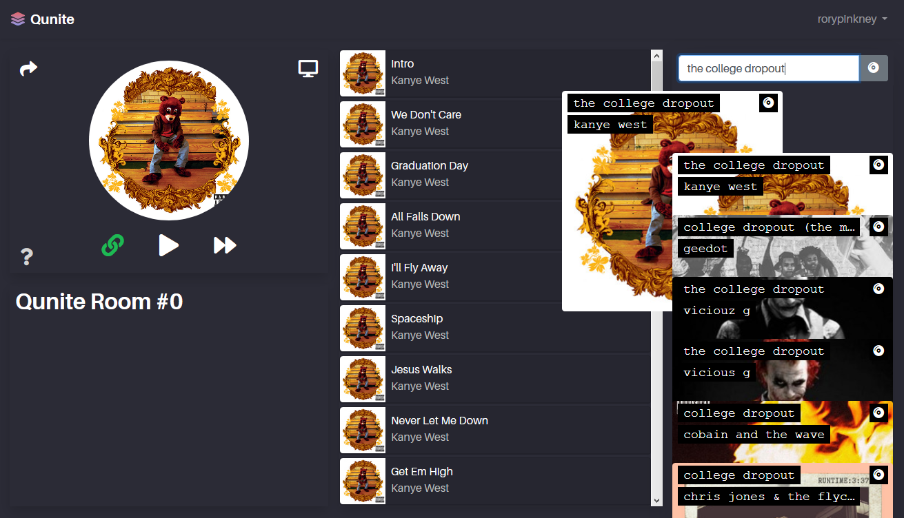

Rory Pinkney
Software Engineer
Profile
I am an enthusiastic and capable software engineer with skills in a broad range of programming paradigms. I am particularly interested in low
level programming concepts and techinques; however, most of my professional work has involved web client development using modern reactive javascript
frameworks (Vue) so I am also very experienced on the front-end. I have enjoyed a rich set of modules provided by the University of East Anglia
which has allowed me to gain a good understanding of many areas of computer science. I have continued on at UEA to study for my master's degree with a
thesis focusing on improving diagnosis of early-onset Alzheimer's disease by employing advanced deep learning techniques on a combination of neuro-imaging
modalities.
Outside of university, I have built a couple of Node.js web applications as
side projects
and set up a sole trader business to gain
experience providing professional software engineering services. I have played guitar for over 10 years and it remains a strong passion of mine alongside programming.
Quick Skills
-
Advanced
- Languages: Javascript • C++
- Frameworks: Vue.js • Node.js • Bootstrap
- Other: HTML • CSS • MongoDB • Git • Machine Learning
-
Proficient
- Languages: C • Java • C# • Python • ARMv7 Assembly Language
- Frameworks:
-
Competent
I am very fast learner and I am confident that the concepts I have learnt in my time at university will enable me to pick up any language that I may
be required to write in.
Experience
Alongside my studies I have also been working professionally as a software engineer, UEA research assistant and as an occasional associate tutor for
computer science modules at the university. This has helped me develop experience working in professional environments where communication and cooperation
are key to efficiency. Towards the end of my second year at university, I set up a sole trader business
Polysoft IT
PSSL
(through Polysoft IT) |
Web Developer |
| University of East Anglia |
Associate Tutor |
| Research Assistant |
Projects
Alongside university and professional work as a software engineer, I have also created a couple of side projects, both for my own enjoyment and to
solve problems which I personally felt should be solved. I have a particular interest in developing in the Spotify ecosystem because I feel that there
are many social aspects of music which are yet to be properly explored by music streaming services.
FastFest
FastFest is a project that a univeristy friend and I designed and built in about a week during February 2020 which allows users to sign in to their Spotify account and be
recommended a music festival based on a weighted analysis of their listening habits. It is a node.js web application which combines the Spotify and Skiddle
APIs, applying a simple algorithm two a user's top artists and tracks to give each artist a weighted score of how likely the user is to enjoy seeing them live.
The application then interrogates the Skiddle API and ranks each festival based on a score from the number of matching artists. Additionally, you are able to
create a dynamic festival poster image which can be downloaded or shared instantly to Twitter.
This the first side project that either of us had ever worked on and it taught us both a lot about the process of developing a full web application right from
inital design to deployment.

Qunite
Qunite is a solo project I took up in March 2020, about a month after completing FastFest. It is a web application which allows you to create a single, shared Spotify
queue and listen together with your friends on your own devices. This means you and any number of friends can listen to the same album at the same time, even if you're
miles apart. I designed and built this because it was something that I personally was interested in having. A lot of my friendships are built on a shared love of music,
and with many of them now scattered around the UK, I wanted some way of sharing that social aspect of music despite the distance.
Qunite is built using Node/Express, MongoDB
and Vue.js and is hosted on a DigitalOcean linux droplet
here.
